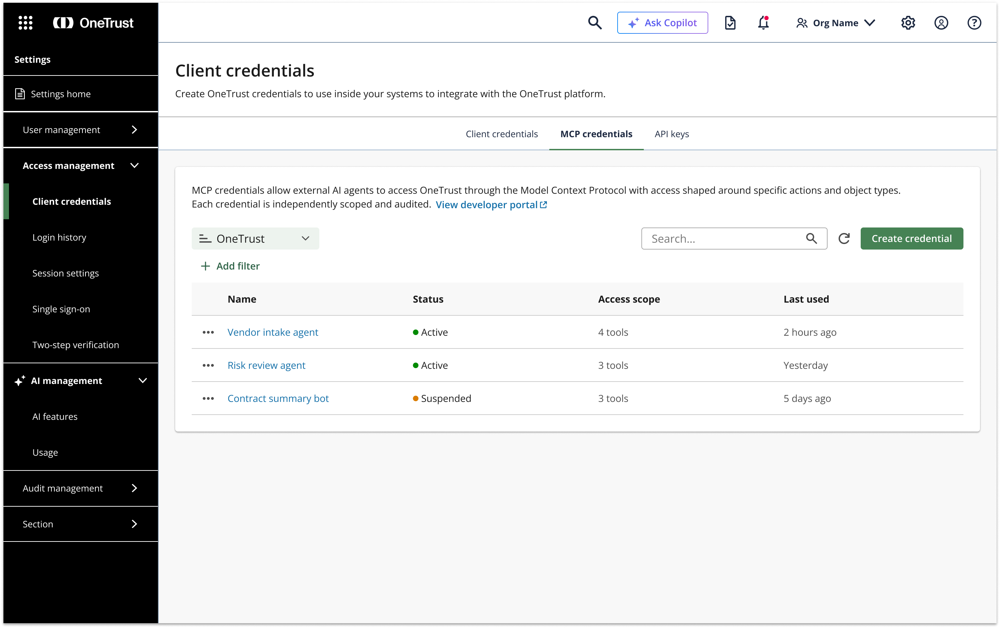
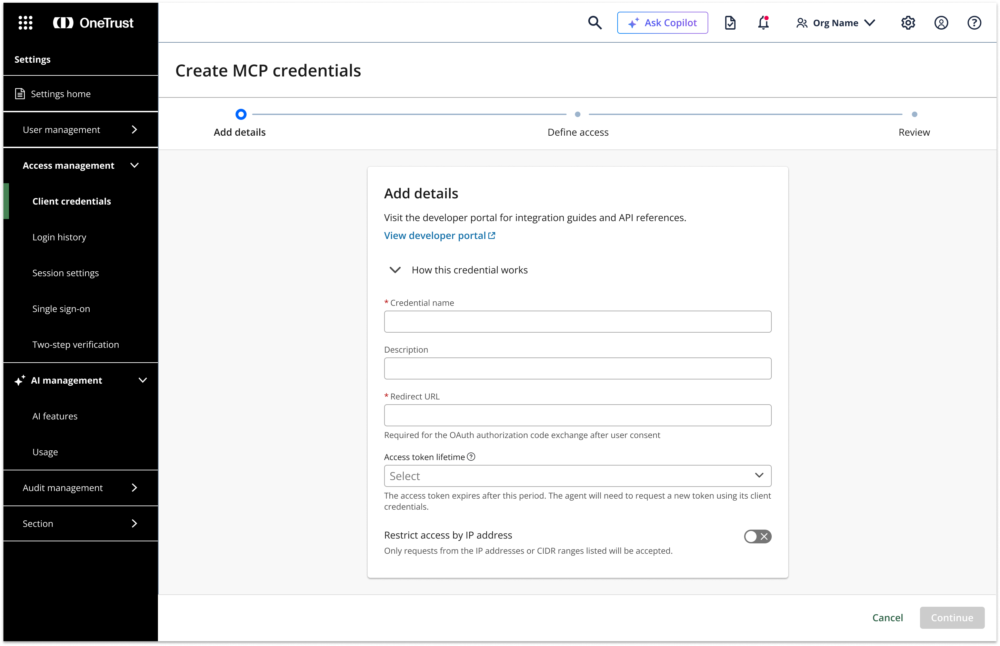
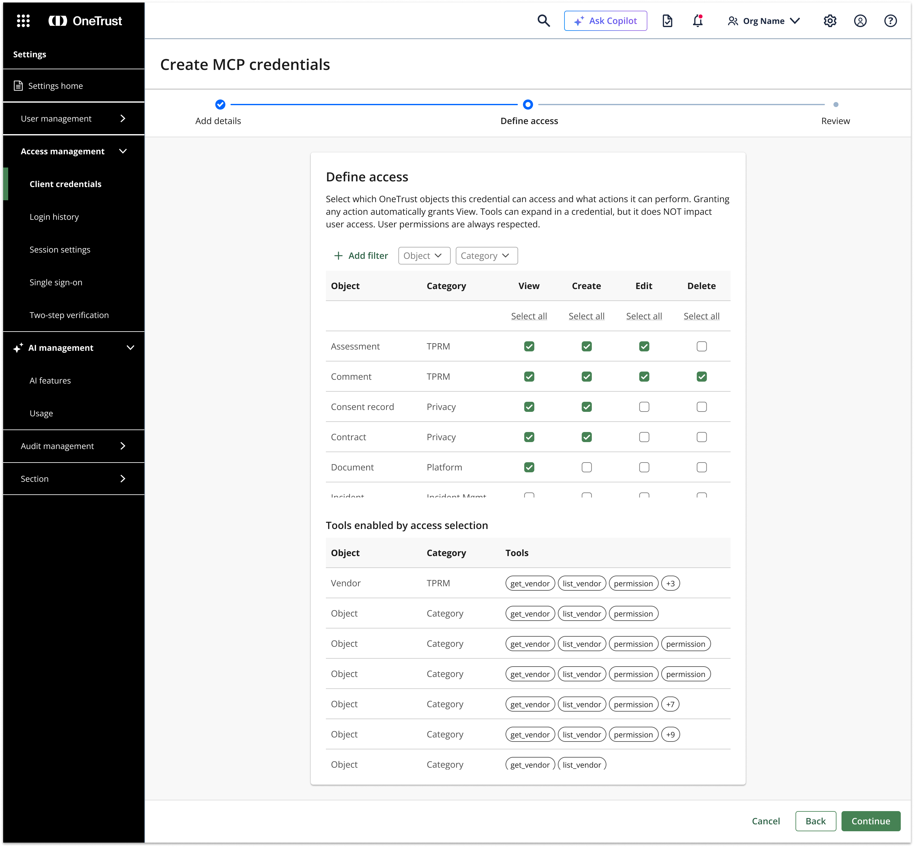
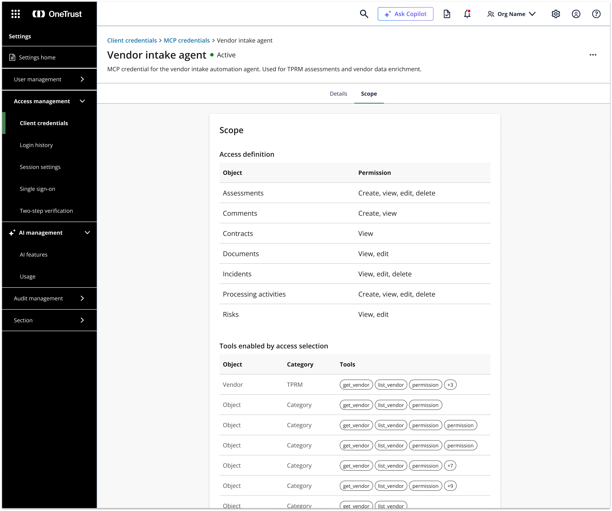

OneTrust is building toward an AI-native platform. One critical piece of that is serving AI-advanced customers — enterprises who are building their own copilots, agents, and automation layers and need governed access to OneTrust data and workflows. This case study focuses on the MCP credential experience: the UX that lets developers create, scope, and audit AI agent credentials safely.
OneTrust is transforming from a monolithic governance suite into an AI-native platform. That transformation has many facets — in-product AI discovery, guided enablement, AI state transparency, and more. This case study covers one specific piece: building the MCP platform access layer for AI-advanced customers.
AI-advanced customers are enterprises actively building their own agents, copilots, and automation layers. They need a production-ready, governed way to connect those systems to OneTrust — with the right scopes, user-context binding, and a full audit trail. Without this, they either can't integrate at all or rely on overly broad API credentials with no governance story.
The goal: Let developers create the right credential with the right scope, bind it to the right user context, and test safely — while giving admins the visibility to govern and audit exactly what each agent can do and has done.
OneTrust's existing credential system was built for traditional server-to-server API integrations — module-scoped, no user-context binding, no AI attribution in audit logs. It wasn't designed for agents acting on behalf of users, or for the governance visibility that enterprise security and compliance teams require.
At the same time, the concepts involved — OAuth bearer tokens, mTLS, OBO (on-behalf-of) user binding, least-privilege scoping — are inherently complex. The UX challenge was to make these concepts legible and actionable for both developers setting up credentials and admins overseeing them.
I led the UX strategy for the MCP credentialing experience across three connected surfaces: the credential creation flow for developers, the credential detail and governance view for admins, and the intent-based scope model that bridges both.
Rather than exposing raw API modules, the scope model is organized by workflows and tools — each with a plain-language description of what data it touches, what it can change, and what auth it requires. This shifts the mental model from technical permissions to business intent.
The flow forks at step one: AI Agent credentials (intent-based scopes, OBO user binding) versus Standard API credentials (module-based, no OBO). Making this distinction explicit upfront prevents misconfiguration and sets the right governance expectations from the start.
Audit attribution was designed in from the beginning — not bolted on. Every AI-mediated action surfaces a clear actor chain (user → agent → credential → tool → audit record) so security and compliance teams can distinguish AI activity from human activity in logs and record metadata.
The AI Management section gives admins a single place to govern all AI activity across the tenant — MCP credential counts, usage metrics, OBO failure rates, and an entry point to create new agent credentials. This surface makes AI activity visible before anything goes wrong.

The creation experience is a five-step wizard: credential type → name & options → define access → user context → review & issue. A persistent summary panel on the right keeps the developer oriented throughout, showing exactly what they've configured so far.
Step one makes the fork explicit: AI Agent / MCP credentials (OBO user binding, tool-level scoping) versus Standard API credentials (module-based, no OBO). Getting this decision right upfront prevents misconfigured access and sets the right governance expectations from the start.

Step two configures name, description, access token lifetime, and IP restrictions. The placeholder copy ("e.g. Vendor Intake Agent") reinforces the mental model — this is a named agent, not a generic API key.
Step three is where the governance model comes to life — a matrix of OneTrust objects (Vendor, Assessment, Risk, Contract, Consent record, etc.) across permission types (Read, Create, Update, Delete, Launch workflow, Approve/reject). Developers grant only what the agent needs. This is an early prototype exploring the interaction model for granular object-level scoping.

Step four is arguably the most important governance decision: how should OneTrust identify the human user behind actions taken by the agent? Dynamic user context (OBO) means the agent passes the current user's identity at token exchange — so every action is attributed to the real person operating the agent, not a generic service account. The activity attribution preview makes this concrete before the developer commits.

The credential experience is one piece of a broader AI-native platform strategy. Upcoming work includes the intent-based scope selector with inline tool descriptions and data-touch disclosures, OBO user binding and federation guidance, the developer portal MCP landing and live tool catalog, and the AI attribution patterns for audit logs and record metadata.
Additional screens and the full strategy deck are available on request.